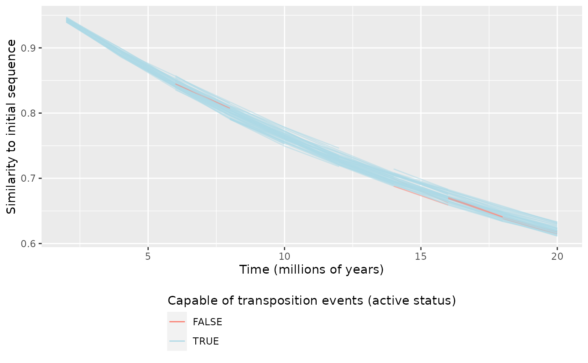
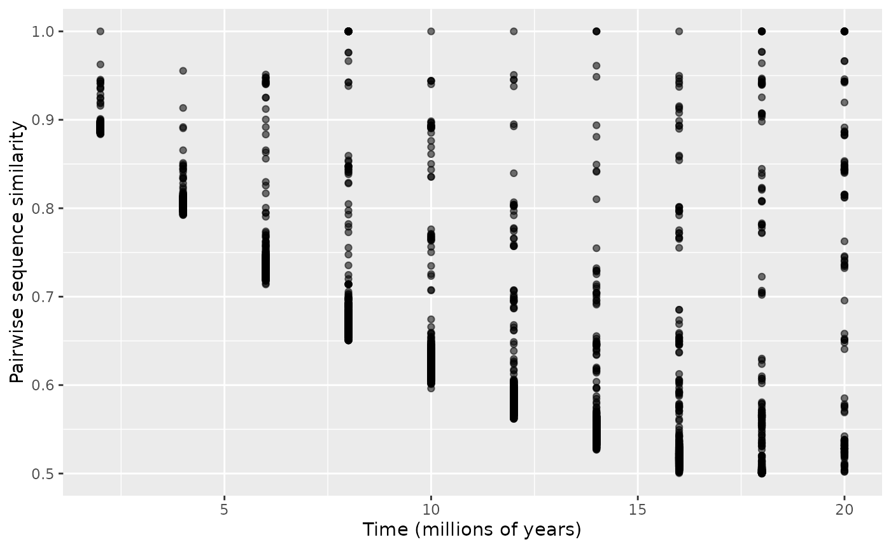
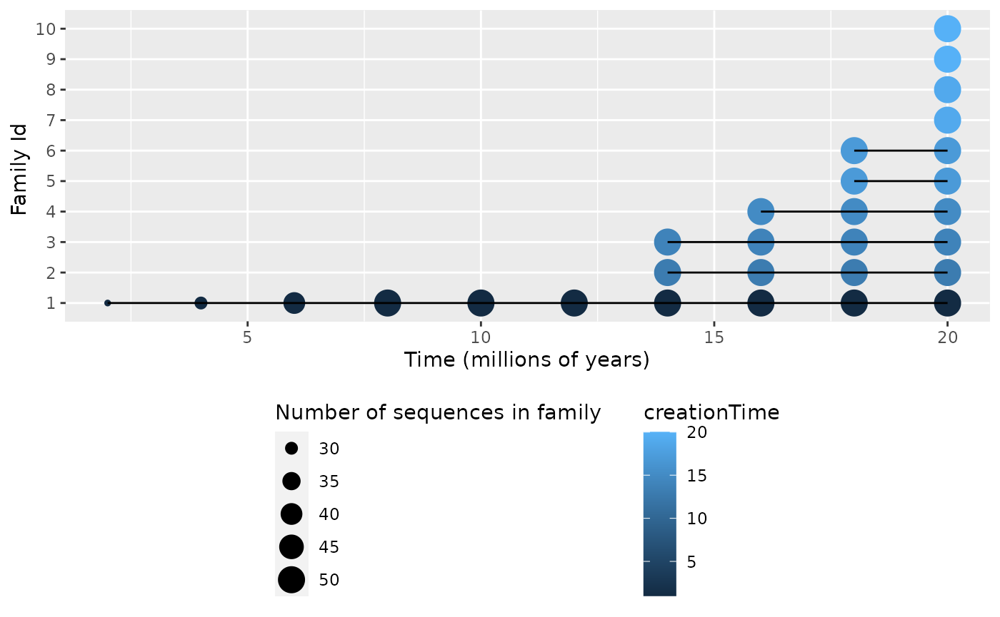

retrocombinator
vignettes/simulations.Rmd
simulations.RmdThe retrocombinator package provides a method for simulating the molecular evolutionary process of retrotransposon recombination over large scales of time.
To use it, load the library first.
To run a simulation, call the simulateEvolution() function. This runs a simulation with default parameters, and returns a path to a simulation output file.
simulateEvolution()
#> [1] "simulationOutput.out"To overwrite any parameters, first create objects to represent the parameters you wish to overwrite, such as in the example given below. Refer to the section below for what the various parameters are. Whenever a parameter is not specified explicitly, the default will be used.
# --- NOT RUN (this is an alternative) ---
recombParams <- RecombParams(recombMean = 1.0)
activityParams <- ActivityParams(lengthCriticalRegion = 20,
probInactiveWhenMutated = 0.1)
simulateEvolution(recombParams = recombParams, activityParams = activityParams)
# ----------------------------------------By default, simulateEvolution() runs a simulation on randomly generated sequences. To use a custom sequence, specify it in SequenceParams (more details in the section below, that describes all possible parameters to the simulation).
# --- NOT RUN (this is an alternative) ---
# Obtain your sequence in your favourite way
library(Biostrings)
fastaInput <- readDNAStringSet('path/to/your/FASTA/file')
yourSequence <- toString(fastaInput$yourSequence)
# Override the sequence parameters and pass it to the simulation
sequenceParams <- SequenceParams(initialSequence = yourSequence)
simulateEvolution(sequenceParams = sequenceParams)
# ----------------------------------------SequenceParams represents what set of retrotransposons the simulation starts off with. It is constructed by either specifying an explicit initial sequence, or a sequence length (in which case the sequence is created randomly by sampling from a uniform A/G/C/T distribution.) Besides that, the number of initial copies of the initial retrotransposon needs to be specified (the simulation creates multiple copies of the initial sequence to begin with):
sequenceLength : numeric Sequence length (number of nucleotides) of the initial retrotransposon (constructed randomly); ignored if initialSequence is not NULL (default = 5000)
initialSequence : character The initial retrotransposon to consider; can be NULL if sequenceLength is specified instead (default = NULL)numInitialCopies : numeric Number of copies of initial retrotransposon (default = 20)
ActivityParams represents the parameters used during a simulation in which we keep track of a retrotransposon’s active status. A retrotransposon that is active is capable of transposition or bursting, but potentially loses its active status if a point mutation affects a critical part of the sequence.
lengthCriticalRegion: numeric Sequence length (number of nucleotides) of the critical region of a retrotransposon (default = 10)
probInactiveWhenMutated : numeric The probability that a singe point mutation to the critical region causes a sequence to become inactive (default = 0.01)
MutationParams represents how what nucleotide substitution model will be used to modify the sequences during the simulation. It is constructed from one of the following character literals to the argument model:
"JC69" Jules and Cantor - 1969"K80" Kimura - 1980 (default)
"F81" Felsenstein - 1981"HKY85" Hasegawa, Kishino and Yano - 1985"TN93" Timura and Nei - 1993"GTR" General Time Reversible Model, Tavaré - 1986BurstParams represents how an active retrotransposon will burst during transposition. It comprises of the following:
burstProbability : numeric The probability that an active retrotransposon will increase in copy number during a time jump of one timestep (default = 0.1)
burstMean : numeric The Poisson mean for the distribution that specifies how many new sequences an active sequence will create during bursting (default = 1)
maxTotalCopies : numeric The largest population size of sequences to keep track of (if this is exceeded, sequences are randomly discarded to simulate death) (default = 50)
RecombParams represents how two transposons recombine during transposition
recombMean : numeric The expected number of template switches during recombination between two sequences (chosen from a Poisson distribution with this as its mean) (default = 1.5)
recombSimilarity : numeric How similar does an active sequence have to be with another sequence for them to be allowed to be recombine during transposition? (default = 0.80)
SelectionParams represents what sequences we are interested in storing during the simulation. It comprises of the following:
selectionThreshold : numeric What sequence similarity to the original sequence do we wish to maintain? Sequences that diverge beyond this similarity level are dropped over the course of simulation (default = 0.3)
FamilyParams represents how we keep track of families during the simulation. It comprises of the following:
familyCoherence : numeric What sequence similarity do two sequences have to be to each other for them to be considered to be of the same family? (default = 0.70)
maxFamilyRepresentatives : numeric How many family representatives to keep track of during the simulation? (default = 20)
SimulationParams represents how long the simulation will run for, and at what timescale. It comprises of the following:
numSteps : numeric The number of steps in our simulation - the simulation starts at a step count of 0, and runs until the step count is numSteps (default = 20)
timePerStep : numeric How much real time does one step in our simulation measure, in millions of years (default = 1)
OutputParams represents how and where the output of the simulation will be saved. It comprises of the following:
outputFilename : character Where should the simulation be saved? (default = ‘simulationOutput.out’)
outputNumInitialDistance : numeric How many times during the simulation should we output the distance of sequences to the initial sequence? (default = 10)
outputNumPairwiseDistance : numeric How many times during the simulation should we output pairwise distances between all pairs of sequences? (default = 10)
outputNumFamilyLabels : numeric How many times during the simulation should we output the family numbers of each sequence? (default = 10)
outputNumFamilyMatrix : numeric How many times during the simulation should we output the pairwise distances between family representatives? (default = 10)
outputMinSimilarity : numeric What is the minimum similarity between two sequences we should report on? (default = 0.5)
SeedParams represents how to select the seed for randomisation for the simulation. It comprises of the following:
toSeed : logical Should this simulation be run with a specified seed to begin with? If FALSE, a seed based on system time is used (default = TRUE)
seedForRandom : numeric If toSeed is TRUE, what should the initial seed for the random number generator be? (default = 0)
The simulation creates a custom output file and returns a path to it (specified by outputFilename in OutputParams, which by default is 'simulationOutput.out'). This file can be parsed by parseSimulationOutput().
data <- parseSimulationOutput('simulationOutput.out')
# --- NOT RUN (this is an alternative) ---
# Alternatively, using the pipe operator
library(magrittr) # For %>%
data <- simulateEvolution() %>%
parseSimulationOutput()
# ----------------------------------------This contains a list of two dataframes, that keep track of retrotransposon sequences, their similarity to the initial sequence, their pairwise similarity, and their lineage, across the timesteps of the evolution.
For pairwise similarity, pairs are not duplicated, and only distinct pairs are given. That is, for any timestep and sequences with sequenceId \(a\) and \(b\) present at that time, a row is present in the pairwise dataframe if and only if \(a < b\) .
print(names(data$params))
#> [1] "SequenceParams_sequenceLength"
#> [2] "SequenceParams_initialSequence"
#> [3] "SequenceParams_numInitialCopies"
#> [4] "ActivityParams_lengthCriticalRegion"
#> [5] "ActivityParams_probInactiveWhenMutated"
#> [6] "MutationParams_model"
#> [7] "BurstParams_burstProbability"
#> [8] "BurstParams_burstMean"
#> [9] "BurstParams_maxTotalCopies"
#> [10] "RecombParams_recombMean"
#> [11] "RecombParams_recombSimilarity"
#> [12] "SelectionParams_selectionThreshold"
#> [13] "FamilyParams_familyCoherence"
#> [14] "FamilyParams_maxFamilyRepresentatives"
#> [15] "SimulationParams_numSteps"
#> [16] "SimulationParams_timePerStep"
#> [17] "OutputParams_outputFileName"
#> [18] "OutputParams_outputNumInitialDistance"
#> [19] "OutputParams_outputNumPairwiseDistance"
#> [20] "OutputParams_outputNumFamilyLabels"
#> [21] "OutputParams_outputNumFamilyMatrix"
#> [22] "OutputParams_outputMinPairwiseSimilarity"
#> [23] "SeedParams_toSeed"
#> [24] "SeedParams_seed"
# Prints out all the parameters the simulation was run with
print(colnames(data$sequences))
#> [1] "step" "realTime" "sequenceId"
#> [4] "parentMain" "parentOther" "distanceToInitial"
#> [7] "isActive"
# step - timestep in the simulation
# realTime - time since the start of the simulation (in millions of years)
# sequenceId - the unique ID of the sequence (to track it over time); initial
# sequence has sequenceId 0 to (numInitialCopies-1)
# parentMain - the unique ID of the sequence this burst from;
# (-1 if nothing)
# parentOther - the unique ID of the sequence its parent recombined with;
# (-1 if nothing)
# distanceToInitial - the distance to the initial sequence
# isActive - whether or not the sequence is capable of transposition
print(colnames(data$pairwise))
#> [1] "step" "realTime" "sequenceId1" "sequenceId2"
#> [5] "distancePairwise"
# step - timestep in the simulation
# realTime - time since the start of the simulation (in millions of years)
# sequenceId1 - an ID of a sequence present at the time
# sequenceId2 - an ID of a different sequence present at the time; not all pairs
# are given - that is, for sequences a and b, either (a, b) or (b, a)
# is present as a row but not both
# distancePairwise - the distance between the two sequences
print(colnames(data$familyRepresentatives))
#> [1] "step" "realTime" "familyId" "creationTime" "sequenceId"
# step - timestep in the simulation
# realTime - time since the start of the simulation (in millions of years)
# familyId - the unique ID of the family representative (to track it over time)
# creationTime - time this family representative was created (in millions of years)
# sequenceId - a sequence belonging to that family (sequences belonging to a
# family are listed as separate rows, and all sequences belonging
# to that family are listed)
print(colnames(data$familyPairwise))
#> [1] "step" "realTime" "familyId1" "familyId2"
#> [5] "distancePairwise"
# step - timestep in the simulation
# realTime - time since the start of the simulation (in millions of years)
# familyId1 - an ID of a family representative present at the time
# familyId2 - an ID of a different family representative present at the time;
# not all pairs are given - that is, for sequences a and b, either (a, b) or (b,
# a) is present as a row but not both
# distancePairwise - the distance between the two family representativesSummary statistics can be obtained from the data as follows.
summariseEvolution(data) # TODOThe data can be visualised using the plotEvolution function
plotEvolution(data, "initial") # Distance to initial sequence
plotEvolution(data, "pairwise") # Pairwise distances between sequences
plotEvolution(data, "families") # Family sizes